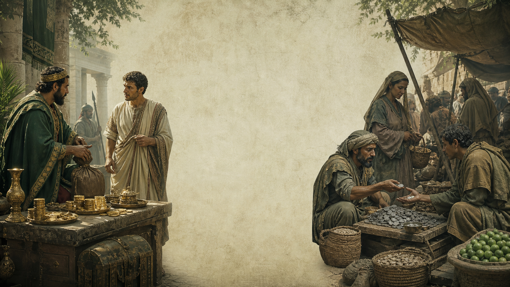

ทองคำมีมูลค่าสูงมากเมื่อเทียบกับขนาดและน้ำหนัก
ทองคำชิ้นเล็กๆ ก็ซื้อของได้มากมาย การแบ่งเป็นเศษย่อยๆ
เพื่อซื้อของจำนวนน้อยจึงเป็นเรื่องยาก ดังนั้นจึงจำเป็นต้องใช้
โลหะชนิดอื่นที่มีมูลค่าน้อยกว่าเข้ามาเสริมสำหรับ
ธุรกรรมมูลค่าต่ำในชีวิตประจำวัน
โจทย์เดียวกัน แนวคิดเดียวกัน
แต่พื้นที่อื่น ก็ใช้วัสดุอื่น
ในพื้นที่อื่นอาจไม่ได้ใช้ทองคำและเงินคู่กัน อย่างในสยามเราใช้
แร่เงิน (พดด้วง) สำหรับมูลค่าขนาดใหญ่ คู่กับเปลือกหอย (เบี้ย)
สำหรับมูลค่าขนาดเล็ก